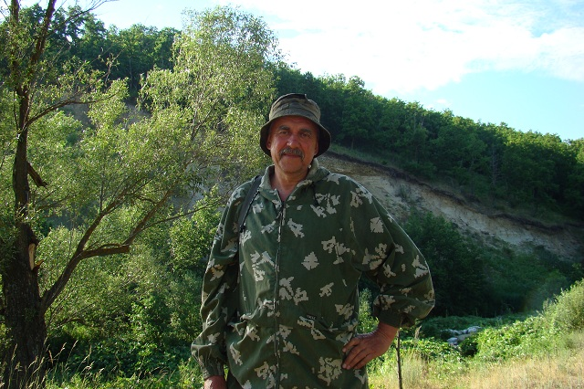
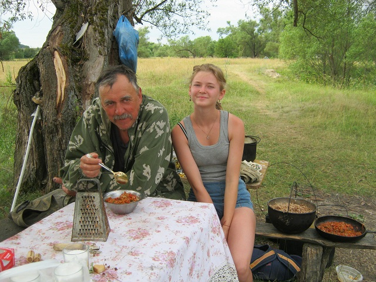
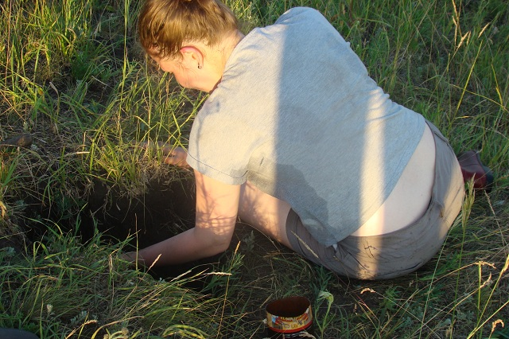
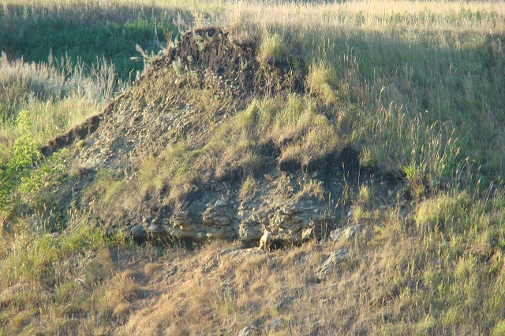

2018 г.
В июне - июле 2018 года состоялась экологическая
экспедиция
в составе 6 человек - учащихся МБОУ гимназии № 1 и школ г. Пензы,
руководителя Иванова С.В., специалиста заповедника "Приволжская
лесостепь" Горбушиной Т.В. Экспедиция проходила как и в прошлом году
в Неверкинском районе Пензенской области. Были задействованы ООПТ
"Шуро-Сиран" и участок заповедника "Приволжская лесостепь" -
"Кунчеровская лесостепь". Экспедиция проводилась с целью мониторинга
полученных в прошлом году данных. На территории ООПТ "Шуро-Сиран"
школьники работали вместе со студентами ЕГФ пединститута ПГУ, которые
проходили практику со своими руководителями Смирновым Д.С., Леоновой
Н.А..Муравьевым И.В., Чернышевым В.А., Полумордвиновым О.А. Были
собраны новые данные для написания исследовательских проектов. Ребята
загорели,
набрались сил для нового учебного года. На территории "Кунчеровской
лесостепи" работали в тесном контакте с Лебежинской И.П. и егерями
заповедника. За что отдельное спасибо директоу заповедника Добролюбову
А.Н.

Руководитель экспедиции - Иванов С.В.
Вид на лагерь с Белой горы ООПТ
"Шуро-Сиран"

Вид на село Бикмурзино

Приятная трапеза после тяжелого утра
Юдина Ксения за установкой ловчих
цилиндров
Ох, нелегкая это работа

Очень жесткий грунт в этом году
Вид на колонию сурков №2 ООПТ
"Шуро-Сиран"
Вот он какой - сурок из Красной книги
Вот какие мы юннаты
Пришла помощь от мальчиков
Работа скребком
В ловушки попали земноводные -
чесночницы
Сурок в колонии после сенокоса
Нелегкая работа у биолога
Вид колонии после сенокоса
Лисья нора на склоне Белой горы
Череп сурка у лисьей норы
Сурки в колонии после сенокоса
Тяжело, жарко, а надо
Один из пяти выживших в 2018 году
Лисья нора в овраге недалеко от колонии
Все участвуют в сборе материала
Изучаем видовое разнообразие растений с
Горбушиной Т.В.
Засушливое лето 2018 года
Будущий ученый - Горбушина Алина
Степной участок колонии выгорает от жары
Домой - в лагерь
Ну очень жарко
Рабочий момент экспедиции
Маринка рисует картинку

Вид на Каменный овраг у с. Бикмурзино

Лиса у норы в Каменном овраге
Пруд у села Каменный овраг
Семья сурков в Каменном овраге
Гости в лагере
Лов ночных чешуекрылых
Грязнов Андрей разбирает улов
Кормовые тропы сурков в Кунчеровской
лесостепи
Рабочий момент в Кунчеровской лесостепи
И здесь жесткий грунт
А сурки ушли в летнюю спячку
Установка лочих цилиндров
Вот такая она - смерть биолога
Бродячие собаки на колонии Кунчеровской
лесостепи
Работа скребком
Обитатель сурчиных нор - гадюка степная
Ловушки муравьиных львов на сурчинах

Долгий путь домой на закате
2001 год
2002 год
2003 год
2004 год
2005 год
2006 год
2007 год
2009 год
2010 год
2011 год
2012 год
2013 год
2013 год
2014 год
2015 год
2016 год
2017 год
| 


{kind=link}
{kind=link}
{kind=link}
{kind=link}
{kind=link}
{kind=link}
{kind=link}
{kind=link}
{kind=link}
{kind=link}
{kind=link}
{kind=link}
{kind=link}
{kind=link}
{kind=link}
{kind=link}
{kind=link}
{kind=link}
{kind=link}
{kind=link}
{kind=link}
{kind=link}
{kind=link}
{kind=link}
{kind=link}
{kind=link}
{kind=link}
{kind=link}
{kind=link}
{kind=link}
{kind=link}
{kind=link}
{kind=link}
{kind=link}
{kind=link}
{kind=link}
{kind=link}
{kind=link}
{kind=link}
{kind=link}
{kind=link}
{kind=link}
{kind=link}
{kind=link}
{kind=link}
{kind=link}